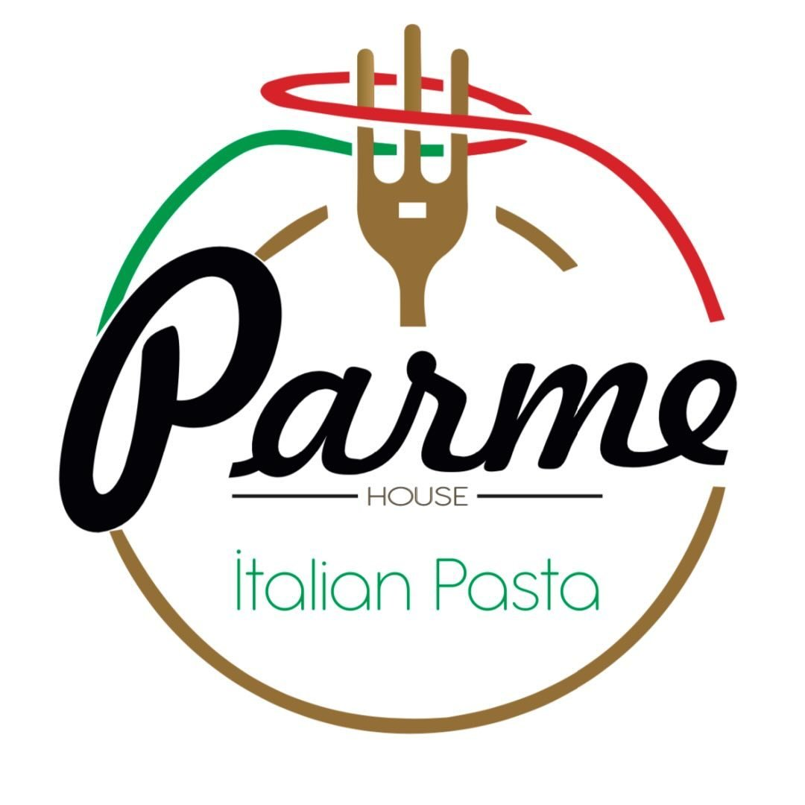
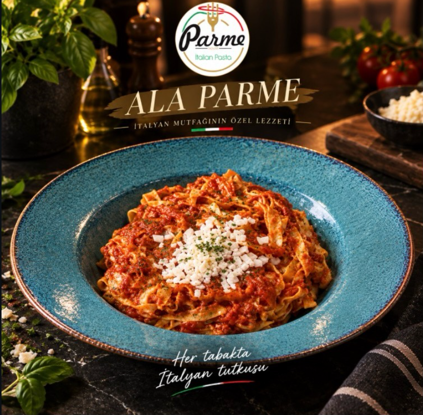
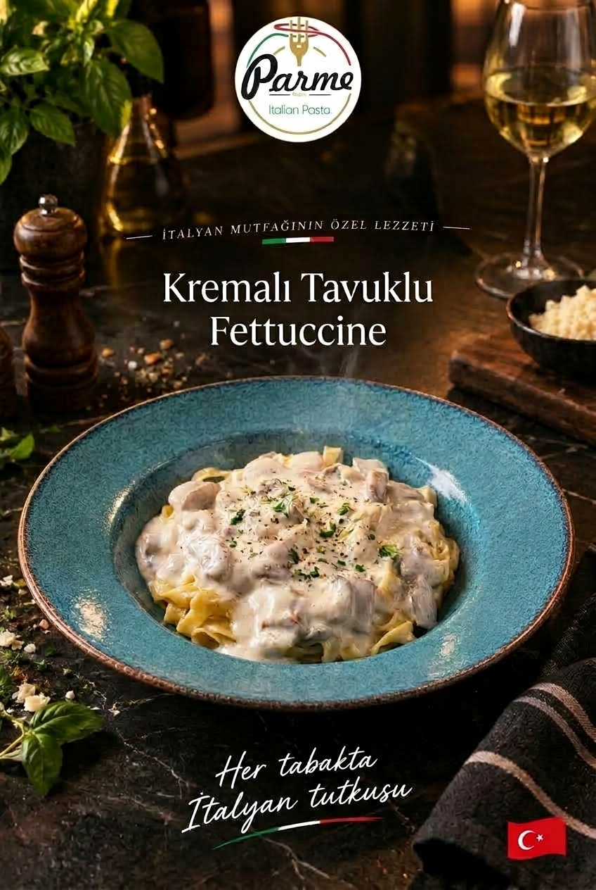
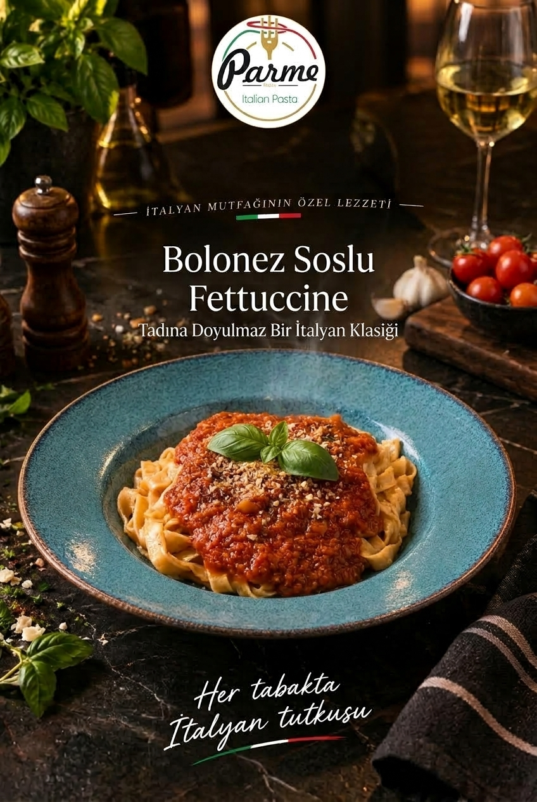
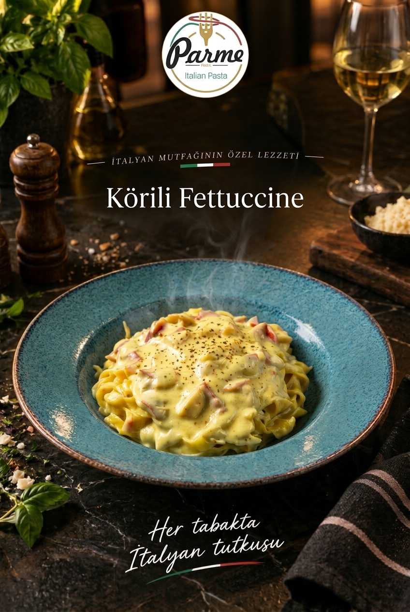
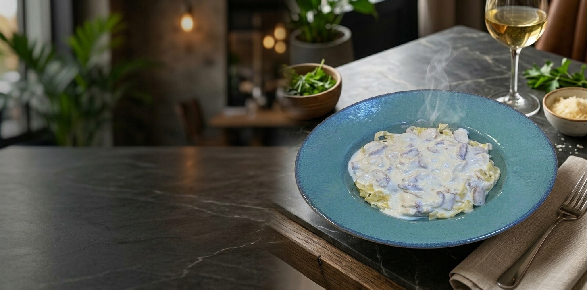

ParmeHouse
Parme House, bir düşünceyle başladı: Güzel bir makarna için ne uzun beklemeye ne de karmaşık bir sofraya ihtiyaç var. Sıcak, taze ve doyurucu bir tabak, herkesin ulaşabileceği kadar yakın olmalı.
Özdemir AVM'deki self servis düzenimizle siparişinizi siz verirsiniz, tabağınız hemen hazırlanır ve dilediğiniz masaya geçersiniz. İster alışveriş arasında hızlı bir mola, ister arkadaşlarınızla keyifli bir öğle yemeği olsun, Parme House'ta acele etmeden yemeğin tadını çıkarırsınız.
Her gün taze hazırladığımız makarnalarımızı klasik ve özel soslarla buluşturuyoruz. Amacımız, sofradan memnun kalkmanız. Sizi de her tabakta İtalyan tutkusunu yaşamaya bekliyoruz.




El yapımı makarnanın zarif dokusunu; tereyağında özenle sotelenmiş tavuk ve taze mantar, ipeksi kıvamda özel Alfredo sosumuz ve seçkin sebzeli baharat dokunuşuyla buluşturuyoruz. Her malzemenin kendi karakterini koruduğu, şef dokunuşuyla tamamlanan yoğun aromalı ve kremamsı bir İtalyan klasiği.
Parme House mutfağından, imza niteliğinde bir lezzet.
Kaliteli un ve taze yumurtayla her gün yeniden açılır.
Hazır ürün kullanmıyoruz, her şey kendi mutfağımızda hazırlanır.
Klasiklerin yanında, sadece burada bulacağın soslar.
📍Bağlık Mahallesi Erdemir Caddesi Özdemir Park AVM no 93/A kat 3
🕒 Her gün 10:00 - 22:00
Yol Tarifi Al📍İncivez Mahallesi Üniversite Caddesi no 23-k
🕒 Her gün 11:00 - 01:00
Yol Tarifi Al© 2026 ParmeHouse | Tüm Hakları Saklıdır.